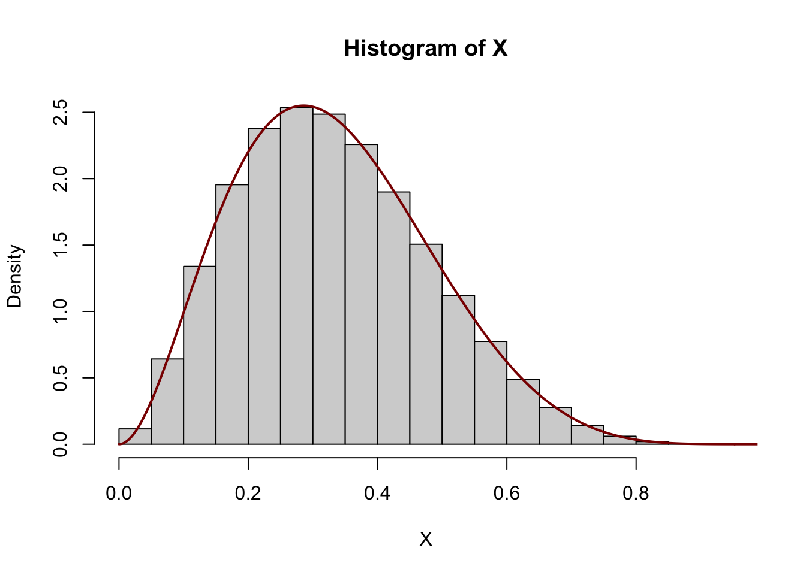
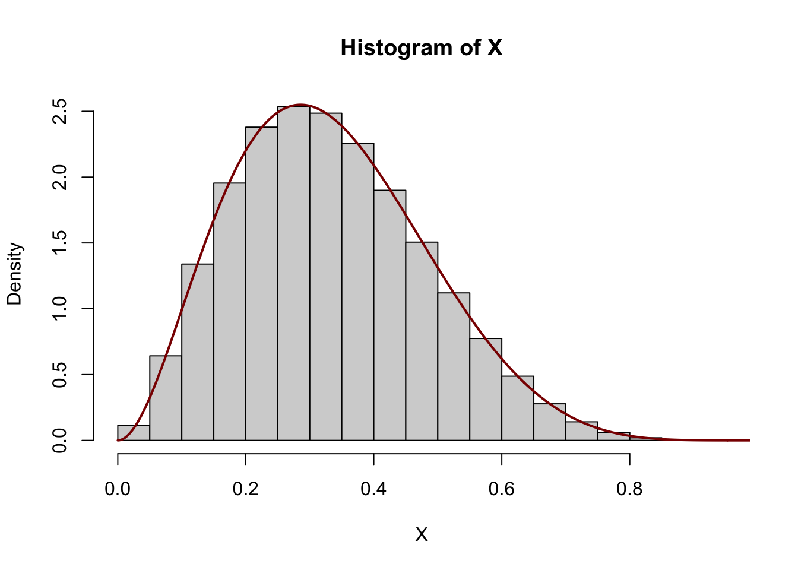
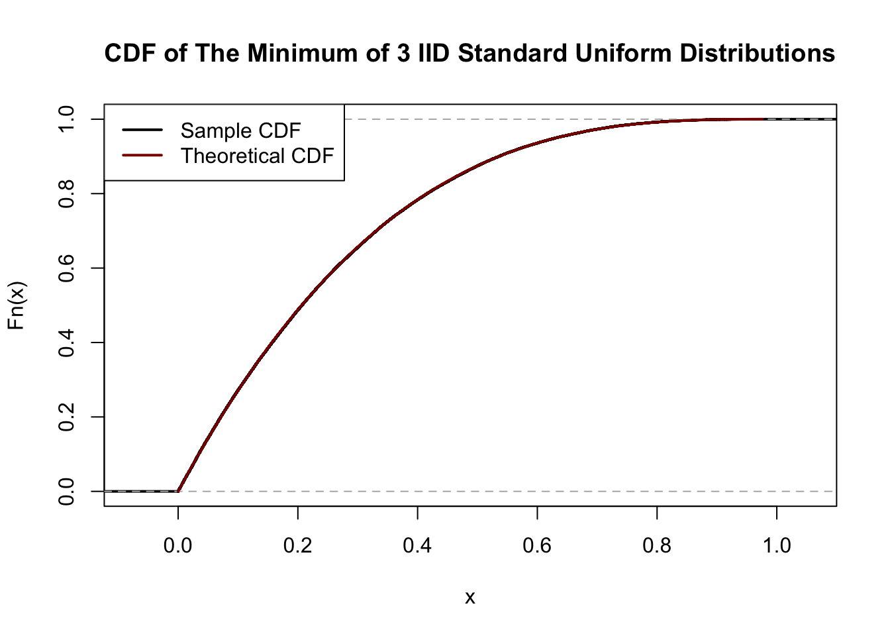
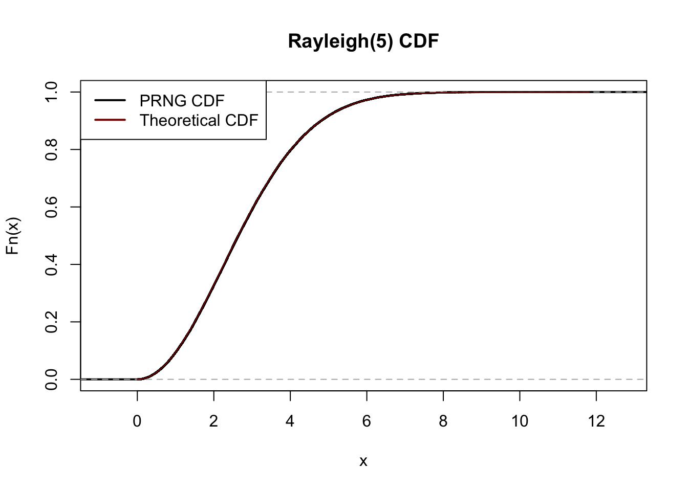
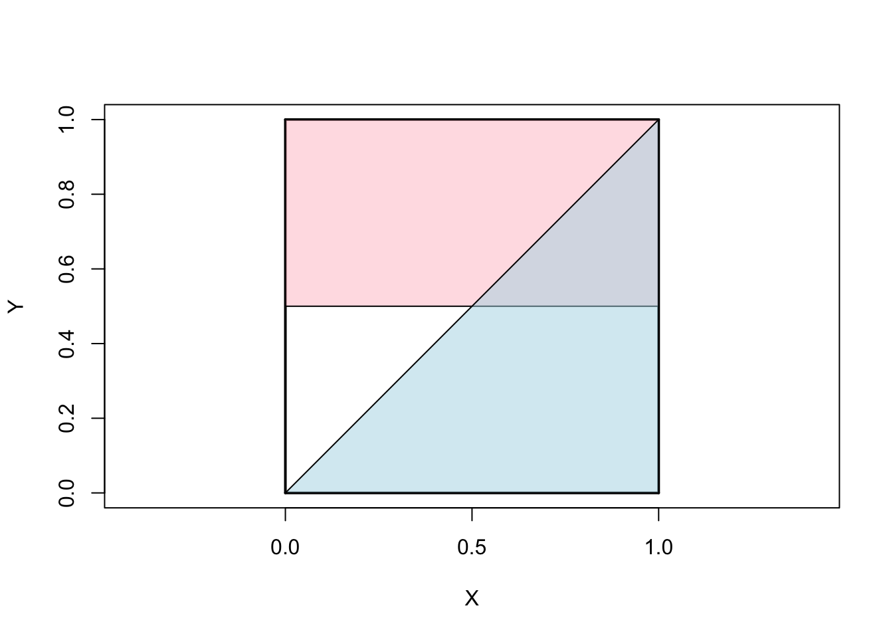

X <- rbeta(1e6, 3, 6)
x <- seq(0, 1, length.out=401)
hist(X, probability=TRUE)
lines(x, x^2*(1-x)^5 / beta(3, 6), lwd=2, col="red4")
\[\newcommand{\P}{\mathbb{P}}\newcommand{\E}{\mathbb{E}} \newcommand{\V}{\mathbb{V}} \newcommand{\bX}{\mathbf{X}} \newcommand{\bA}{\mathbf{A}} \newcommand{\bI}{\mathbf{I}} \newcommand{\C}{\mathbb{C}} \newcommand{\M}{\mathbb{M}} \newcommand{\R}{\mathbb{R}} \newcommand{\bZ}{\mathbf{Z}} \newcommand{\bb}{\mathbf{b}} \newcommand{\by}{\mathbf{y}} \newcommand{\bSigma}{\mathbf{\Sigma}} \newcommand{\bzero}{\mathbf{0}} \newcommand{\bbeta}{\mathbf{\beta}} \newcommand{\bepsilon}{\mathbf{\epsilon}}\] The original exam packet can be found here.
Suppose \(X\) is a continuous random variable with PDF proportional to \(x^2(1-x)^5\) and support on \([0, 1]\). What is \(\E[X]\)?
This is similar to a question from Test 3, but here you need to pattern match on a beta distribution instead of a gamma distribution.
We recognize this as the PDF of a \(\text{Beta}(3, 6)\) distribution, hence it has \[\E[X] = \frac{\alpha}{\alpha + \beta} = \frac{3}{3+6} = \frac{1}{3} \approx 33.3\%\].
We can verify that samples from this distribution have the right “shape”:
X <- rbeta(1e6, 3, 6)
x <- seq(0, 1, length.out=401)
hist(X, probability=TRUE)
lines(x, x^2*(1-x)^5 / beta(3, 6), lwd=2, col="red4")
Here we’re cheating a bit however since we assumed / knew the normalizing constant (\(1/B(3, 6)\)) to make the curves match up. It is possible, albeit a bit slower, to get samples from a distribution with unknown normalizing constant (and unknown distribution ID) using a technique called “rejection sampling.” See discussion on Cross-Validated.
Let \(T\) be the time until a radioactive particle decays and suppose that \(T \sim \text{Exponential}(10)\). The half-life of the particle is the time at which there is a 50% chance that the particle has decayed (i.e., the median of \(T\)). What is the half life of \(T\)?
This question appeared essentially verbatim on Test 1, but here we set \(\lambda = 10\).
Recall the solution given on Test 1, where we found
\[\tau_{\text{Half-Life}} = \frac{\log 2}{\lambda}\]
Here, this becomes
\[\tau_{\text{Half-Life}} = \frac{\log 2}{10} \approx 0.0693\]
Suppose grades on a certain exam are normally distributed with mean 70 and standard deviation 4. Using the Gaussian Chernoff bound, approximate the probability that a given student gets a grade of 90 or higher.
This question is substantially the same as a question on Test 3, with different numbers.
We modify the solution given in the Test 3 solutions.
As always, we standardize our variables to perform this type of calculation:
\[\begin{align*} \P(\text{Grade} \geq 90) &= \P(70 + 4Z \geq 90) \\ &= \P(4Z \geq 20) \\ &= \P(Z \geq 5) \end{align*}\]
Here, we apply the Chernoff bound to have
\[\P(Z \geq 5) \leq e^{-5^2/2} = e^{-12.5} \approx 0.003726653\%\]
As we move into the tails, we see that this simple bound is suprisingly accurate:
Let \(X_1, X_2, \dots\) be a series of IID \(\chi^2_6\) random variables and let \(Y_1, Y_2, \dots\) be a series of IID \(\chi^2_{4}\) random variables. (All \(X_i, Y_j\) are independent as well.) Let \[\widetilde{S}_n = \frac{1}{n} \sum_{i=1}^n \frac{X_i}{Y_i}.\] What is the limiting value of \(\widetilde{X}_n\) as \(n \to \infty\)?
Hint: What is the distribution of each term \(T_i = \frac{X_i}{Y_i}\)? You may want to multiply by a constant.
This is similar to a LLN question from Test 3, here replacing a (scaled) \(F\) distribution for a squared \(t\) distribution.
Because each term \(T_i\) is a ratio of \(\chi^2\) random variables, we recognize it as being similar to an \(F\) distribution. To make it exactly an \(F\) distribution, we must divide the numerator and the denominator by the degrees of freedom as follows:
\[T_i \sim \frac{\chi^2_6}{\chi^2_4} \sim \frac{6}{4} * \frac{\chi^2_6/6}{\chi^2_4/4} \sim 1.5 * F_{6, 4}\]
Hence, we recognize the sum as the scaled average of many independent \(F_{6,4}\) random variables, so \[\widetilde{S}_n \buildrel P \over \to \E[T_1] = \E[1.5 F_{6,4}] = 1.5 \E[F_{6,4}] = \frac{3}{2} * \frac{4}{4-2} = 3.\]
We can, as always, verify this in simulation:
as desired.
A certain family has 5 children, 2 girls and 3 boys. Assuming all birth orders are equally likely, what is the probability that the youngest and the oldest children are both girls?
This is a minor modification of a question from Test 1.
Suppose that the two girls are named \(G_1\) and \(G_2\); there are two orders in which they could be born, \(G_1, G_2\) and \(G_2, G_1\). Similarly, there are \(3! = 6\) orders in which the boys could be born. This gives a total of \(12=2 * 6\) possible birth orders that fit our criterion. We can get the probability of this event (set of outcomes) by dividing by the total number of outcomes, \(5!=120\), giving a final probability of \(12/120 = 10\%\).
In simulation,
Let \(Z_1, Z_2, Z_3\) be three IID uniform random variables on the interval \([0, 1]\). What is the CDF of \(Z_* = \min\{Z_1, Z_2, Z_3\}\)?
Hint: Note that, for a single uniform random variable, \(F_{Z_1}(z) = z\) for \(z \in [0, 1]\).
This is a minor modification of a problem from Test 3, with the uniform CDF replacing the normal CDF.
By analogy with the similar previous question, we find \[F_{Z_*}(z) = \begin{cases} 0 & z < 0 \\ 1-(1-z^3) & z\in[0, 1] \\ 1 & z > 1 \end{cases}.\]
We show this in simulation:
n <- 1e5
Z1 <- runif(n)
Z2 <- runif(n)
Z3 <- runif(n)
Z_star <- pmin(Z1, Z2, Z3)
CDF_Z_star <- ecdf(Z_star)
z <- seq(min(Z_star), max(Z_star), length.out=401)
CDF_theoretical <- 1 - (1-z)^3
plot(CDF_Z_star, lwd=2, col="black",
main="CDF of The Minimum of 3 IID Standard Uniform Distributions")
lines(z, CDF_theoretical, lwd=2, col="red4")
legend("topleft", col=c("black", "red4"), lwd=2,
legend=c("Sample CDF", "Theoretical CDF"))
Suppose \(X\) has MGF \(\M_X(t) = e^{5t + 8t^2}\). What is the standard deviation of \(X\)?
This is a minor variant of a question from Test 3, here replacing a Gamma MGF with a Normal MGF.
We can solve this in two ways:
We can recognize this as a Normal MGF of the format \[\M_{\mu + \sigma Z}(t) = \exp\left\{\mu t + \frac{\sigma^2}{2} t^2\right\}\] so \(X \sim \mathcal{N}(5, 4^2)\) and hence \(X\) has a standard deviation of \(4\).
If we do not recognize this as a common MGF, we can differentiate through the MGF to get the first and second central moments.
\[\begin{align*} \M'_X(t) &= (5 t + 8 * t^2)' \M_X(t) \\ &= (5 + 16 t) \M_X(t) \\ \implies \M'_X(0) &= (5+ 16 * 0) \underbrace{\M_X(0)}_{=1} \\ &= 5 \\ \end{align*}\]
and
\[\begin{align*} \M''_X(t) &= (5+ 16t) \M'_X(t) + (5 + 16t)' \M_X(t) \\ &= (5 + 16t)^2 \M_X(t) + 16 \M_X(t) \\ \implies \M''_X(0) &= (5 + 16 * 0)^2 \underbrace{\M_X(0)}_{=1} + 16 \underbrace{\M_X(0)}_{=1}\\ &= 5^2 + 16 \\ &= 41 \end{align*}\]
Hence, \[\V[X] = \E[X]^2 - \E[X]^2 = M''_X(0) - M'_X(0)^2 = 41 - 5^2 = 16\] which gives a standard deviation of 4 for \(X\).
Four players, named A, B, C, and D, are playing a card game. A standard well-shuffled deck of cards is dealt to the players so each player receives a 5 card hand. How many possibilities are there for the hand that player A will get? (Within a hand, the order in which cards were received doesn’t matter.)
This is a question from Test 1 with a different size of hand.
Because we do not care about the hands held by B, C, or D, we can approach this as a simple combinatorics problem:
\[\binom{52}{5} = \frac{52!}{5!(52-5)!} = \frac{52 * 51 * 50 * 49 * 48}{5 * 4 * 3 * 2 * 1} = 2598960\]
Let \(X_1 = 4 - 2Z_1 + 4Z_2\) and \(X_2 = 1 + 3Z_1 - 9Z_2\) where \(Z_1, Z_2\) are independent standard normal variables. What is the covariance of \(X_1\) and \(X_2\), i.e., \(\C[X_1, X_2]\)?
This is a modification of a question from Test 2 with different weights and asking for covariance instead of correlation.
We apply our standard calculations:
\[\begin{align*} \C[X_1, X_2] &= \C[4 - 2Z_1 + 4Z_2, 1 + 3Z_1 - 9Z_2] \\ &= \C[- 2Z_1 + 4Z_2, 3Z_1 - 9Z_2] \\ &= (-2)(3)\C[Z_1, Z_1] + (-2)(-9)\C[Z_1, Z_2] + (4)(3)\C[Z_2, Z_1] + (4)(-9)\C[Z_2, Z_2] \\ &= -6\V[Z_1] + 18 * 0 + 12 * 0 -36 \V[Z_2] \\ &= -6 * 1 -36 * 1 \\ &= -42 \end{align*}\]
In matrix notation, we simply compute:
\[\begin{align*} \begin{pmatrix} -2 & 4 \\3 & -9 \end{pmatrix}\begin{pmatrix} -2 & 4 \\3 & -9 \end{pmatrix}^{\top} = \begin{pmatrix} 20 & -42 \\ -40 & 90 \end{pmatrix} \end{align*}\]
From which we can read off \(\C[X_1, X_2] = -42\).
As always, in simulation:
The \(\text{Rayleigh}(\beta)\) distribution has CDF \(F_Y(y) = 1 - e^{-y^2/2\beta}\). Suppose you have a source of uniform random variables \(U\). Find a transform of \(U\), \(h(\cdot)\), such that \(h(U) \sim \text{Rayleigh}(5)\).
This is a variant of a question from Test 3, with the Rayleigh replacing the Weibull distribution.
Since we have a simple CDF, we are able to apply the probability integral transform. We begin by inverting the CDF:
\[ \begin{align*} u &= 1 - e^{-y^2/2\beta} \\ e^{-y^2/2\beta} &= 1-u \\ -\frac{y^2}{2\beta} &= \log(1-u) \\ y^2 &= -2\beta \log(1-u) \\ y &= \sqrt{-2\beta\log(1-u)} \end{align*}\]
As usual, we can simplify slightly by noting \(U \buildrel d \over = 1-U\) to get:
\[Y = \sqrt{-2\beta \log U}\]
Hence we can sample from a Rayleigh(5) distribution as \(Y = \sqrt{-10\log U}\).
In code,
We can verify that the sample CDF matches our desired CDF:
X <- rRayleigh(1e5, 5)
X_cdf <- ecdf(X)
plot(X_cdf, main="Rayleigh(5) CDF", lwd=2)
x <- seq(0, max(X), length.out=401)
R_cdf <- 1-exp(-x^2/10)
lines(x, R_cdf, col="red4")
legend("topleft",
col=c("black", "red4"),
lwd = 2,
legend=c("PRNG CDF", "Theoretical CDF"))
Numerically,
Asymptotic one-sample Kolmogorov-Smirnov test
data: X
D = 0.0041427, p-value = 0.06461
alternative hypothesis: two-sidedA great match!
Let \(P_1, \dots, P_{40}\) be IID Poisson random variables, each with mean \(2\). Using the CLT, approximate the probability that \(\P(\sum_{i=1}^{40} P_i > 100)\).
This is a combination of two problems from Test 3: one using a CLT approximation to bound a sum and one on the distribution of the average of Poisson variates.
We first note that each \(P_i\) has \(\E[P_i] = \V[P_i] = 2\) by standard properties of the Poisson, so if we let \(\overline{P}_{40}\) be their average, the CLT gives us \[\overline{P}_{40} \buildrel d \over \approx \mathcal{N}\left(2, \frac{2}{40}\right) = \mathcal{N}\left(2, 0.05\right).\] We then note that
\[\begin{align*} \P\left(\sum_{i=1}^{40} P_i > 100\right) &= \P\left(\overline{P} > 2.5\right) \\ &= \approx \P(2 + \sqrt{0.05}Z > 2.5) \\ &= \P(\sqrt{0.05}Z > 0.5) \\ &= \P(Z > 0.5/\sqrt{0.05}) \\ &= 1 - \P(Z \leq 0.5/\sqrt{0.05}) \\ &= 1-\Phi(0.5/\sqrt{0.05}) \\ &\approx 1.27\% \end{align*}\]
In simulation:
A typo on the version of the exam given to students indicated that 50 variables could be used instead. Full marks are given for a correct answer for either form of the problem.
We first note that each \(P_i\) has \(\E[P_i] = \V[P_i] = 2\) by standard properties of the Poisson, so if we let \(\overline{P}_{50}\) be their average, the CLT gives us \[\overline{P}_{50} \buildrel d \over \approx \mathcal{N}\left(2, \frac{2}{50}\right) = \mathcal{N}\left(2, 0.04\right).\] We then note that
\[\begin{align*} \P\left(\sum_{i=1}^{50} P_i > 100\right) &= \P\left(\overline{P} > 2\right) \\ &= \approx \P(2 + \sqrt{0.04}Z > 2) \\ &= \P(\sqrt{0.04}Z > 0) \\ &= \P(Z > 0) \\ &\approx 50\% \end{align*}\]
In simulation:
So there is some discrepancy here - and it’s not entirely clear how we should handle any “continuity correction” - but the approximation is still rather accurate.
Let \(X_1, X_2, \dots\) be IID random variables with mean \(\mu\) and finite variance \(\sigma^2\). Find a value of \(n\) (an integer) such that the sample mean \(\overline{X}_n\) is within 1 standard deviation of the mean with probability 99% or greater.
Hint: Chebyshev
This is a variant of a question from Test 3, now requiring us to be within 1 standard deviation instead of 2.
We modify our solution from a prior question.
We recall Chebyshev’s inequality as follows:
\[\P(|X - \mu| > k\sigma) \leq \frac{1}{k^2}\]
or equivalently,
\[\P(|X - \mu| < k\sigma) \geq 1 - \frac{1}{k^2}\]
Here, we are applying Chebyshev to a sample mean, so we scale the standard deviation by \(1/\sqrt{n}\) to obtain:
\[\P(|\overline{X}_n - \mu| < k\sigma / \sqrt{n}) \geq 1 - \frac{1}{k^2}\]
If we want the right hand side to be 99% (so that we are within the bounds), we clearly have \(k = 10\) and we need \(k/\sqrt{n} = 1\), giving a minimum sample size of \[\frac{10}{\sqrt{n}} = 10 \implies n = 100\]
For any (finite-variance) random variable, the sample mean of 25 IID realizations will be within one standard deviation of the mean with 99% probability (or higher). Note that, the number of samples required by Chebyshev’s inequality grows quadratically (25 for 2 SDs to 100 for a 1 SD guarantee), as opposed to methods based on Chernoff bounds which will grow logarithmically.
According to the numbers I just made up, students with dogs are 15 times more likely to loose their homework than students who don’t. If 10% of students in a class have a dog, what is the probability that a student who lost their homework has a dog?
This echoes the CDC question from Test 1, but with different numbers.
Let \(D\) be the event “has a dog” and \(L\) be the event “lost homework”. The problem then gives us \[\P(D) = 0.1 \implies \P(D^c) = 0.9 \text{ and } \P(L | D) = 15 \P(L | D^c)\]
We put these into a Bayes’ rule calculation:
\[\begin{align*} \P(D | L) &= \frac{\P(L | D) * \P(D)}{\P(L)} \\ &= \frac{\P(L | D) * \P(D)}{\P(L|D)\P(D) + \P(L|D^c)\P(D^c)} \\ &= \frac{\P(L | D) * 0.1}{\P(L|D)*0.1 + \P(L|D^c) * 0.9} \\ &= \frac{\P(L | D)}{\P(L|D) + 9\P(L|D^c)} \\ &= \frac{15\P(L | D^c)}{15\P(L|D^c) + 9\P(L|D^c)} \\ &= \frac{15}{15 + 9} \\ &= \frac{5}{8} \approx 62.5\% \end{align*}\]
If you want to do this “directly” by partitioning an outcome space, consider a class of 1,000 students. By assumption 100 will have dogs and 900 won’t. If 15 of the 900 lose their homework, that is a rate of \(1/60\) for non-dog owners; this implies that \(1/4 = 15 * 1/60\) of dog owners will lose their work, here 25. We thus have 40 total lost pieces of work, of which 25 are dog-owners, giving a final probability of \(25/40 = 5/8\).
Note that here we had to select 15/900 as our base rate: the problem doesn’t actually give us a true base rate, but since terms cancel in Bayes’ Rule that isn’t a problem. (In general, if a calculation has to hold for any value, you can simply select a value that gives simple calculations and it must hold there as well.)
The train I take to get to work averages 45 minutes. Use Markov’s inequality to give an upper bound on the probability it takes me more than 2 hours to get to work.
This is a slight variant of the Markov’s inequality question from Test 2.
Let \(T\) be my travel time and \(\E[T] = 2\); then, by Markov’s inequality: \[\P(T > 2) \leq \frac{\E[T]}{2} = \frac{0.75}{2} = \frac{3}{8} = 37.5\%\]
Let \(X \sim \text{Gamma}(4, 2)\) and \(Y \sim \text{Gamma}(1, 5)\). What is \(\V[XY]\)?
This is a variant of a question from Test 2, but here with Gamma distributions instead of normal distributions.
We modify our previous solution to use the new distributions.
Before we begin, let’s recall that, for \(A \sim \text{Gamma}(k, \theta)\), we have \[\E[A] = k\theta \text{ and } \V[A] = k\theta^2 \implies \E[A^2] = \E[A]^2 + \V[A] = (k\theta)^2 + k\theta^2 = \theta^2(k^2+k).\]
In our context, this gives us:
\[\E[X] = 8, \V[X] = 16, \E[X^2] = 80\]
and
\[\E[Y] = 5, \V[Y] = 25, \E[Y^2] = 50\]
Hence,
\[\begin{align*} \V[XY] &= \E[(XY)^2] - \E[XY]^2 \\ &= \E[X^2Y^2] - \E[XY]^2 \\ &= \E[X^2]\E[Y^2] - \E[X]^2\E[Y]^2 \quad \text{ (By independence)} \\ &= 50 * 80 - 8^2 * 5^2 \\ &= 2400 \end{align*}\]
In simulation,
Suppose that \((X, Y)\) are binary random variables generated according to the following joint distribution. What is the covariance of \(X\) and \(Y\)?
| \(\P\) | \(X=0\) | \(X=1\) |
|---|---|---|
| \(Y=0\) | \(\frac{1}{4}\) | \(\frac{1}{3}\) |
| \(Y=1\) | \(\frac{1}{6}\) | \(\frac{1}{4}\) |
A variant of this question with different probabilities appeared on Test 2.
We first note the marginal distributions:
\[\P(X=0) = \P(X=0, Y=0) + \P(X=0, Y=1) = \frac{1}{4} + \frac{1}{6} = \frac{5}{12} \implies \P(X=1) = \frac{7}{12}\]
\[\P(Y=0) = \P(Y=0, X=0) + \P(Y=0, X=1) = \frac{1}{4} + \frac{1}{3} = \frac{7}{12} \implies \P(Y=1) = \frac{5}{12}\]
Hence,
\[\E[X] = \sum_{x=0}^1 \P(X=x) * x = \frac{5}{12} * 0 + \frac{7}{12} * 1 = \frac{7}{12}\]
\[\E[Y] = \sum_{y=0}^1 \P(Y=y) * x = \frac{7}{12} * 0 + \frac{5}{12} * 1 = \frac{5}{12}\] and
\[\E[XY] = \sum_{x, y= 0}^1 \P(X=x, Y=y) * x * y = \frac{1}{4} * 0 * 0 + \frac{1}{3} * 1 * 0 + \frac{1}{6} * 0 * 1 + \frac{1}{4} * 1 * 1 = \frac{1}{4}\] so
\[\C[X, Y] = \E[XY] - \E[X]\E[Y] = \frac{1}{4} - \frac{5}{12} * \frac{7}{12} = \frac{1}{144}\]
The Poisson-Gamma compound distribution makes draws from a Poisson random variable whose mean is itself Gamma distributed. For example, let \(X \sim \text{Gamma}(5, 2)\) and let \(Y | X \sim \text{Poisson}(X)\). Then the variable \(Y\) has a Poisson-Gamma distribution. What is the (unconditional) variance of \(Y\)?
This is a variant of the Beta-Binomial question from Test 3, here replacing the Beta-Binomial with the Poisson-Gamma. (Both of these combinations are important in Bayesian statistics.)
We use the Law of Total Variance, or what BH calls Eve’s Law, to consider this conditionally on knowing \(X\):
\[\begin{align*} \V[Y] &= \V_X[\E_Y[Y|X]] + \E_X[\V[Y|X]] \\ &= \V_X[X] + \E[X] \quad \text{ (Mean and variance of Poisson are both $X$)} \\ &= 5 * 2^2 + 5 * 2 \\ &= 30 \end{align*}\]
In simulation,
Let \((X, Y)\) come from a multivariate normal distribution with mean \(\vec{\mu} = (5, 2)\) and variance matrix \[\mathbf{\Sigma} = \begin{pmatrix} 36 & -8 \\ -8 & 16 \end{pmatrix}\] What is the correlation of \(X\) and \(Y\)?
This is a variant of a question asked on Test 2.
We simply read relevant values from the variance matrix:
\[\V[X] = 36, \V[Y] = 16, \C[X, Y] = -8 \implies \rho_{X, Y} = \frac{\C[X, Y]}{\sqrt{\V[X]\V[Y]}} = \frac{-8}{\sqrt{36 * 16}} = -\frac{1}{3} = -33.3\%\]
Let \(X, Y\) have a joint distribution with PDF of the form \[f_{(X, Y)}(x, y) = c \exp\left\{-\frac{x^2}{6}-\frac{y^2}{54} + \frac{xy}{18}\right\} = c\exp\left\{-\frac{2}{3}\left(\frac{x^2}{4} + \frac{y^2}{36} -\frac{xy}{12}\right)\right\}\] supported on \(\R^2\) (that is, \(X, Y\) can both be any real number). What is \(c\)?
This is a question from Test 8 with the addition of a covariance (cross) term.
We recognize this as an instance of the bivariate normal PDF, so we perform some basic pattern matching. I have already done the hard work of finding the correct arrangement of constants. The bivariate normal PDF has the form:
\[ -\frac{1}{2[1-\rho^2]}\left(\frac{x^2}{\sigma_X^2} - \frac{2\rho xy}{\sigma_X\sigma_Y} + \frac{y^2}{\sigma_Y^2}\right)\]
so we have \(\sigma_X = 2, \sigma_Y=6\). To find the correlation, \(\rho\), we note
\[\begin{align*} -\frac{1}{2[1-\rho^2]} &= -\frac{2}{3}\\ 2[1-\rho^2] &= \frac{3}{2}\\ 1-\rho^2 &= \frac{3}{4}\\ \rho^2 &= \frac{1}{4} \\ \rho &= \pm \frac{1}{2} \end{align*}\]
To get the right sign, we note that the cross term has a negative coefficient already, so we must have \(\rho = +1/2\).
We can check our work by comparing to the cross term:
\[-\frac{2\rho}{\sigma_X\sigma_Y} = -\frac{2 * 1/2}{2 * 6} = -\frac{1}{12}\]
as desired. Finally, we note that the normalization constant for the bivariate normal is
\[c = \frac{1}{2\pi\sigma_X\sigma_Y\sqrt{1-\rho^2}} = \frac{1}{2\pi * 2 * 6 * \sqrt{1-0.5^2}} = \frac{1}{24\pi\sqrt{0.75}} = \frac{1}{12\pi\sqrt{3}} \approx 0.0153\]
We can check this with bivariate integration:
f <- function(x, y) 1/(12 * sqrt(3) * pi) * exp(-x^2/6 - y^2/54 + x * y / 18)
inner_int <- function(y) integrate(function(x) f(x, y), lower=-Inf, upper=Inf)$value
inner_int <- Vectorize(inner_int, "y")
integrate(inner_int, lower=-Inf, upper=Inf)1.000001 with absolute error < 4.1e-05as desired.
A vineyard produces two types of wine: white and red. White wine sells at $25 per bottle and comprises 75% of their production, with the rest being red selling at $50 per bottle. Historically, 10% of the white wine is “spoiled” in transit to America, while 20% of the red is “spoiled.” If a customer calls asking for a refund for a spoiled bottle, what is the expected size of the refund? (Assume that the purchase price is fully refunded.)
This is a new problem, based on one of the student-submitted practice problems.
To compute the expected refund, we need the probabilities that a given spoiled bottle is either white or red. We thus apply Bayes’ rule:
\[\begin{align*} \P(\text{Red}|\text{Spoiled}) &= \frac{\P(\text{Spoiled}|\text{Red}) * \P(\text{Red})}{\P(\text{Spoiled})} \\ &= \frac{\P(\text{Spoiled}|\text{Red}) * \P(\text{Red})}{\P(\text{Spoiled}|\text{Red}) * \P(\text{Red})+\P(\text{Spoiled}|\text{White}) * \P(\text{White})} \\ &= \frac{0.2 * 0.25}{0.2 * 0.25 + 0.1 * 0.75} \\ &= 40\% \\ \implies \P(\text{White} | \text{Spoiled}) &= 1 - \P(\text{Red} | \text{Spoiled}) \\ &= 60\% \end{align*}\]
Hence
\[\begin{align*} \E[\text{Refund}|\text{Spoiled}] &= \E[\text{Refund}|\text{Red}, \text{Spoiled}] * \P(\text{Red}|\text{Spoiled}) + \E[\text{Refund}|\text{White}, \text{Spoiled}] * \P(\text{White}|\text{Spoiled}) \\ &= \$50 * 40\% + $25 * 60\% \\ &= \$35 \end{align*}\]
Let \(P\) be a point chosen uniformly at random on the surface of the Earth. What is the probability that \(P\) falls in the Northern or Western hemispheres?
This is a variant of a question from Test 2, with an “or” in place of an “and”.
\[\begin{align*} \P(\text{N or W}) &= 1 - \P(\text{Not (N or W)}) \\ &= 1 - \P(\text{(Not N) and (Not W)}) \\ &= 1 - \P(\text{S and E}) \\ &= 1 - \P(\text{S})\P(\text{E}) \\ &= 1 - \frac{1}{2}*\frac{1}{2}\\ &= 1 - \frac{1}{4} \\ &= \frac{3}{4} = 75\% \end{align*}\]
Let \(\bZ\) be a vector of 6 independent \(\mathcal{N}(1, 1)\) random variables. What is \(\E[\|\bZ\|^2]\)?
This is a question from Test 2, here modified to consider a non-central \(\chi^2\).
For a single coordinate \(Z_1 \sim\mathcal{N}(1, 1)\), we have \(\E[Z_1^2] = \E[Z_1]^2 + \V[Z_1] = 1^2 + 1 = 2\). Hence, \[\E[\|\bZ\|^2] = \E\left[\sum_{i=1}^6 Z_i^2\right] = \sum_{i=1}^6 \E[Z_i^2] = \sum_{i=1}^6 2 = 12\]
In simulation,
Or
Note that, in R’s parameterization, the non-centrality parameter (ncp) is the sum of the squared means, here \(6\).
Suppose a random variable \(X\) takes continuous values between \(1\) and \(4\) and that its PDF is of the form \(f_X(x) = cx^3\) for some unknown \(c\). What is \(c\)?
This is a variant of a question appearing on Test 1.
Because \(f_X(\cdot)\) defines a PDF, it must integrate to 1. Hence,
\[\begin{align*} c^{-1} &= \int_1^4 x^3\,\text{d}x \\ &= \left.\frac{x^4}{4}\right|_{x=1}^4 \\ &= \frac{4^4}{4}-\frac{1^4}{4} \\ &= \frac{255}{4} \\ \implies c &= \frac{4}{255} \approx 0.00784 \end{align*}\]
We verify this via direct integration:
Suppose that grades in a given course are distributed as follows:
| Grade | A | B | C | D | F |
|---|---|---|---|---|---|
| GPA Points | 4 | 3 | 2 | 1 | 0 |
| Fraction of Class | 25% | 40% | 25% | 5% | 5% |
Given that a student did not receive an A, what is the probability they receieved a D or an F in the course?
This is a minor tweak of a problem from Test 1.
We apply our basic probability rules:
\[\begin{align*} \P(\text{D or F} | \text{Not A}) &= \frac{\P(\text{(D or F) and (Not A)})}{\P(\text{Not A})} \\ &= \frac{\P(\text{(D or F)})}{1-\P(\text{A})} \\ &= \frac{\P(\text{D}) + \P(\text{F)})}{1-\P(\text{A})} \\ &= \frac{0.05 + 0.05}{1-0.25} \\ &= \frac{2}{15} \approx 13.3\% \end{align*}\]
In a dice game, Player A rolls 2 6-sided dice and takes the higher score; Player B rolls one 6-sided dice. If Player A’s score (max of two) is higher than Player B’s (one roll), then Player A wins; if Player B’s roll is greater than or equal to both of Player A’s rolls, then Player B wins. (That is, a “tie” goes to Player B). What is the probability that Player A wins this game?
This is a new question and a surprisingly
We first determine the distribution of Player A’s combined score:
| \(\P(A = 1)\) | \(\P(A = 2)\) | \(\P(A = 3)\) | \(\P(A = 4)\) | \(\P(A = 5)\) | \(\P(A = 6)\) |
|---|---|---|---|---|---|
| \(1/36\) | \(3/36 = 1/9\) | \(5/36\) | \(7/36\) | \(9/36 = 1/4\) | \(11/36\) |
Next, we compute the probability of B winning or tying for each of A’s scores:
| \(A = 1\) | \(A = 2\) | \(A = 3\) | \(A = 4\) | \(A = 5\) | \(A = 6\) | |
|---|---|---|---|---|---|---|
| \(\P(B > A | A = a)\) | \(5/6\) | \(4/6 = 2/3\) | \(3/6 = 1/2\) | \(2/6 = 1/3\) | \(1/6\) | 0 |
| \(\P(B = A | A = a)\) | \(1/6\) | \(1/6\) | \(1/6\) | \(1/6\) | \(1/6\) | \(1/6\) |
| \(\P(\text{B wins} | A = a)\) | \(1\) | \(5/6\) | \(4/6 = 2/3\) | \(3/6 = 1/2\) | \(2/6 = 1/3\) | \(1/6\) |
We can thus compute probabilities;
\[\P(\text{B wins}) = \sum_{a=1}^6 \P(\text{B wins} | A = a) \P(A = a) = \sum_{a=1}^6 \frac{7-a}{6} * \frac{2a-1}{36} = \frac{91}{216} \approx 42.1\%\]
and
\[\P(\text{A wins}) = 1 - \P(\text{B wins}) = \frac{125}{216} = 57.87\%\]
So A’s “advantage” is not as significant as it may seem.
In simulation:
n <- 1e6
data.frame(A1 = sample(1:6, n, replace=TRUE),
A2 = sample(1:6, n, replace=TRUE),
B = sample(1:6, n, replace=TRUE)) |>
mutate(A = pmax(A1, A2)) |>
mutate(A_wins = A > B,
B_wins = B >= A) |>
summarize(P_A_wins = mean(A_wins),
P_B_wins = mean(B_wins)) P_A_wins P_B_wins
1 0.578734 0.421266If we roll dice with more sides, e.g. 20, the advantage to A becomes more pronounced:
n <- 1e6
data.frame(A1 = sample(1:20, n, replace=TRUE),
A2 = sample(1:20, n, replace=TRUE),
B = sample(1:20, n, replace=TRUE)) |>
mutate(A = pmax(A1, A2)) |>
mutate(A_wins = A > B,
B_wins = B >= A) |>
summarize(P_A_wins = mean(A_wins),
P_B_wins = mean(B_wins)) P_A_wins P_B_wins
1 0.641454 0.358546As the number of faces increases, the probability of B winning converges to 1/3. (Can you see why?)
Suppose \(X\) follows a Pareto distribution with CDF \(F_X(x) = 1 - 1/x^4\) supported on \([1, \infty)\). What is \(\E[X | X > 5]\)?
Hint: The Pareto distribution satisfies a `restarting’ property: \(F_{X|X > x_0}(x) = 1 - (x_0/x)^4\) supported on \([x_0, \infty)\).
This is a variant of a question from Test 2 with a slightly different Pareto distribution.
We modify our solution to the previous version of this question.
Following the hint, to use this to get the tail-conditional expectation, we use the re-starting property to get the conditional PDF:
\[f_{X|X \geq x_0}(x) = F'_{X|X \geq x_0}(x) = \frac{\text{d}}{\text{d}x}\left(1 - \left( \frac{x_0}{x}\right)^4\right) = \frac{4x_0^4}{x^5}\]
This lets us compute the tail conditional expectation:
\[\begin{align*} \E[X|X \geq 5] &= \int_5^{\infty} x * f_{X|X \geq 5}(x)\,\text{d}x \\ &= \int_5^{\infty} x * \frac{4 * 5^4}{x^5}\,\text{d}x \\ &= 2500\int_5^{\infty} x^{-4}\,\text{d}x \\ &= 2500\left(\left. -\frac{x^{-3}}{3}\right|_{x=5}^{\infty}\right) \\ &= 2500 \left(-\frac{1}{\infty} - -\frac{5^{-3}}{3}\right) \\ &= \frac{20}{3} \approx 6.667 \end{align*}\]
We can verify this in simulation. R doesn’t have a built-in Pareto RNG, but we can make our own pretty simply:
A group of 40 students are comparing their birthdays; as usual, assume their birthdays are independent, are not February 29th, etc. Find the expected number of pairs of people with birthdays in the same month. (To simplify calculations, you may assume the year has 12 months of 30 days each.)
This is a question from Test 1, replacing days with months.
For a given pair of people, there is a 1/12 chance that they are born in the same month (under our uniformity assumption). Since we have \(\binom{40}{2}=780\) pairs, this gives us an expected number of “shared months” as \(780/12=65\).
We can verify this in simulation:
mean(replicate(1e5, {
birth_months <- sample(month.name, 40, replace=TRUE)
N_shared <- sum(outer(birth_months, birth_months, `==`))
(N_shared - 40)/2
}))[1] 65.01142We can modify the above code to deal with months of different lengths:
mean(replicate(1e5, {
birth_months <- sample(month.name, 40, replace=TRUE,
prob=c(31, 28, 31, 30, 31, 30, 31, 31, 30, 31, 30, 31))
N_shared <- sum(outer(birth_months, birth_months, `==`))
(N_shared - 40)/2
}))[1] 65.06593It seems the “equal month” assumption doesn’t materially change our findings.
Let \(\overline{X}_n\) be a random variable with a \(\mathcal{N}(16, 4/n)\) distribution. Using the Delta Method, what is the approximate distribution of \(\sqrt{\overline{X}_n}\)?
This is a variant of a Question from Test 3, applying a different transformation and with an addition factor of \(n\) in the variance scaling.
Under the delta method, we take
\[g(X) \buildrel d\over \approx \mathcal{N}\left(g(\mu), g'(\mu)^2 \sigma^2\right) \] Since here \(\V[X] \propto 1/n\), we can instead write this as:
\[g(X) \buildrel d\over \approx \mathcal{N}\left(g(\mu), g'(\mu)^2 \sigma^2/n\right) \]
For us, \(g(x) = \sqrt{x}\), so \(g(\mu) = \sqrt{16} = 4\) and \[\begin{align*} g'(x) &= \frac{1}{2\sqrt{x}} \\ g'(x)^2 &= \frac{1}{4x} \\ g'(16)^2 &= \frac{1}{64} \\ \frac{\sigma^2}{n} g'(4)^2 &= \frac{4}{n} * \frac{1}{64} \\ &= \frac{1}{16n} \end{align*}\]
Hence,
\[\sqrt{X} \buildrel d \over \approx \mathcal{N}\left(4, \frac{(1/4)^2}{n}\right)\]
In practice, this is pretty good, but not great, approximation. At \(n=1\),
The quality of the approximation improves as \(n \to \infty\) and \(\V[\overline{X}_n] \to 0\).
Suppose Stephen is playing a guessing game, where he has a 20% chance of answering a given question correctly (IID). If he answers a question correctly, he gets one point. Let \(Q\) be the total number of questions required for him to get 4 points. What is \(\E[Q]\)?
This is a variant of a question from Test 1, here asking about the mean instead of the variance.
The expected time to get one point is \(1/p = 1/0.2 = 5\) so by linearity of expectation the expected total time required is \(4 * 5 = 20\).
You can also approach this by recognizing \(Q \sim \text{NegBinom}(r=4, p=0.2)\) and hence \(\E[Q] = r/p = \frac{4}{0.2} = 20\) but I find the direct linearity argument more compelling.
\(X\) is a mixture distribution defined as follows:
That is, \(X\) is the value of each mixture arm with equal probability. \(Z, X_1, X_2, X_3\) are all independent. Compute the expected value of \(X\).
A question on Test 1 asked for the variance of this mixture, instead of the mean.
By the law of total expectation:
\[\begin{align*} X &= X_1 * (Z == 1) + X_2 * (Z == 2) + X_3 * (Z == 3) \\ \E[X] &= \E[X_1 * (Z == 1) + X_2 * (Z == 2) + X_3 * (Z == 3)] \\ &= \E[X_1] * \E[Z == 1] + \E[X_2] * \E[Z == 2] + \E[X_3] * \E[Z == 3] \\ &= \E[X_1] * \P[Z = 1] + \E[X_2] * \P[Z = 2] + \E[X_3] * \P[Z = 3] \\ &= 2 * \frac{1}{3} + 5 * \frac{1}{3} + 0 * \frac{1}{3} \\ &= \frac{7}{3} \end{align*}\]
In simulation:
Suppose it takes a student 2 minutes on average to answer a question on an exam. Furthermore, assume that it never takes the student less than 1 minute or more than 5 minutes to answer a single question. Assuming the exam has 40 questions total and that the time taken on each question is IID, use the Chernoff inequality for means of bounded random variables to give an upper bound on the probability that it takes more than two hours to finish the exam.
This question appeared verbatim on Test 3.
We repeat our solution from Test 3:
We apply the Chernoff bound for means of bounded random variables. Here, we take the variables to fall in the range \([1, 5]\), each with mean 2. For the student to take more than 2 hours to finish the exam, the average time per question must be greater than \(3\) minutes. We put these numbers into the Chernoff bound to get:
\[\P(\overline{T}_{40} > E[\overline{T}_{40}] + 1) \leq e^{-2n t^2/(b-a)^2} = e^{-2 * 40 * 1^2 / (5-1)^2} = e^{-80/16} = e^{-5} \approx 0.67\%\] Here we see that by taking advantage of the mean structure of \(T\) (or equivalently, the IID sum structure), we are able to get a very tight bound on the probability of the student not being able to finish the exam in the permitted 2 hour time.
Let \(X\) be the number of Heads in 10 fair coin tosses, assumed IID. Find the conditional variance of \(X\), conditional that the first two tosses do not match (i.e., no HH or no TT).
This is a minor tweak to a question from Test 1, changing the conditioning in an irrelevant way.
Under the conditioning, there is always exactly one H in the “end rolls”, so this question is really just asking about the variance of the 8 “middle rolls”, which are binomially distributed.
\[\V[\text{Binom}(8, 0.5)] = 8 * 0.5 * (1-0.5) = 2\]
Suppose that a mother and daughter are selected from a population whose heights are \(\mathcal{N}(66, 4^2)\); suppose further that the correlation between heights within a family is \(\rho = 25\%\). What is the probability that the mother is more than 4 inches taller than her daughter?
This is a question from Test 2, with different numbers.
We adapt our answer from Test 2.
Let \(M, D\) be the heights of the father and son respectively. We have
\[\P(M > D + 4) = \P(M - D > 4) = 1 - \P(M - D < 4) = 1 - F_{M - D}(4)\]
so we just need to compute the CDF of \(M - D\). Since \(M, D\) are jointly normal, their difference is also normal. We thus only need to compute its mean and variance.
\[\E[M - D] = \E[M] - \E[D] = 66 - 66 = 0\]
and
\[\V[M - D] = \V[M] - 2\C[M, D] + \V[D] = \sigma_M^2 - 2 \sigma_M\sigma_D\rho_{M, D} + \sigma_F^2 = 4^2 - 2 * 4 * 4 * \frac{1}{4} + 4^2 = 24\]
Hence, standardization of \(S - F\) gives us:
\[\P(M > D + 4) = 1 - F_{M-D}(4) = 1 - \Phi\left(\frac{4 - 0}{\sqrt{24}}\right) \approx 20.7\%\]
Again, we can verify this in simulation. We need to be able to generate correlated variables and most multivariate normal samplers take the variance matrix as the input:
\[\V[(M, D)] = \begin{pmatrix} 4^2 & 4 * 4 * \frac{1}{4} \\ 4 * 4 * \frac{1}{4} & 4^2 \end{pmatrix} = \begin{pmatrix} 16 & 4 \\ 4 & 16 \end{pmatrix}\] Next, we use MASS::mvrnorm to generate our samples:
The \(\text{Skellam}(\mu_1, \mu_2)\) distribution is given by \(X = N_1 - N_2\) where \(N_1, N_2\) are independent Poisson random variables, with mean \(\mu_1, \mu_2\) respectively. What is the variance of a \(\text{Skellam}(4, 3)\) distribution?
This is a new question, designed to test your use of variance formulas. The Skellam distribution is commonly used to measure the win differential in a soccer match. (Can you argue why this is a reasonable model?)
In a mixed-effects regression model, the response is determined by a combination of a noise term, a non-random “fixed effect” term, and a subject specific “random effect” term. Symbolically, the vector of responses \(\by\) is distributed as \[\by |\bb \sim \mathcal{N}(\bZ\bb + \bX\bbeta, \sigma^2 \bI) \text{ where } \bb \sim \mathcal{N}(\bzero, \nu^2 \bI)\] What is the (unconditional) variance matrix of \(\by\)? Here \(\bZ, \bX\) are fixed (non-random) matrices and \(\bbeta\) is a fixed (non-random) vector.
This is a new question, designed to test your use with the matrix algebra used to compute multivariate variances. It’s also a good way to see how properties of the multivariate normal can be used to analyze more complex dependency structures you will learn in later courses.
We note that, by definition,
\[\by = \bZ\bb + X\bbeta + \bepsilon\]
where \(\bb \sim \mathcal{N}(\bzero, \nu^2 \bI)\) and \(\bepsilon \sim \mathcal{N}(0, \sigma^2\bI)\). Hence,
\[\begin{align*} \V[\by] &= \V\left[ \bZ\bb + X\bbeta + \bepsilon\right] \\ &= \V[\bZ\bb] + \V[\bepsilon] \\ &= \bZ\V[\bb]\bZ^{\top} + \V[\bepsilon] \\ &= \bZ(\nu^2 \bI)\bZ^{\top} + \sigma^2 \bI \\ &= \nu^2 \bZ\bZ^{\top} + \sigma^2 \bI \end{align*}\]
Suppose that the random variables \((X, Y)\) have joint PDF \(f_{(X, Y)}=1\) with support on the unit square \([0, 1]^2\). What is the probability that \(X > Y\) given \(Y > 0.5\)?
This is looks like variant of a problem from Test 1, but here the uniform density makes things far easier.
Graphically, we divide the unit square into several regions:
alpha <- scales::alpha
plot(x=0, y=0, xlim=c(0, 1), ylim=c(0, 1),
type="n", xlab="X", ylab="Y", asp=1)
segments(x0=c(0, 0, 0, 1), y0=c(0, 1, 0, 0),
x1=c(1, 1, 0, 1), y1=c(0, 1, 1, 1),
lwd=2)
polygon(x=c(0, 1, 1, 0), y=c(0.5, 0.5, 1, 1),
col=alpha("pink", 0.5))
polygon(x=c(0, 1, 1), y=c(0, 1, 0),
col=alpha("lightblue", 0.5))
Here, the pink region denotes the area where \(Y > 0.5\) while the blue region denotes the area where \(X > Y\). Since we condition on \(Y > 0.5\), by uniformity, we are looking for the ratio of the purple (pink + blue) region to the pink region. By inspection, this is \(1/8\) divided by \(1/2\) or \(\frac{1}{4}\).
In simulation:
A Laplace distribution can be formed as \(L = S* E\) where \(S\) is a discrete uniform random variable taking values \(\{-1, +1\}\) and \(E\) is an exponential random variable with mean \(\lambda\) and \(S\) and \(E\) are independent. What are \(\E[L]\) (2 points) and \(\V[L]\) (3 points)?
This is a new question, using basic expectation and variance calculations.
For expectation,
\[\begin{align*} \E[L] &= \E[SE] \\ &= \E[S]\E[E] \\ &= 0 * \E[E] \\ &= 0 \end{align*}\]
For variance, we have several options, here let’s proceed by conditioning on \(S\):
\[\begin{align*} \V[L] &= \V[SE] \\ &= \V_S[\E_E[SE]] + \E_S[\V_E[SE]] \\ &= \V_S[S \E_E[E]] + \E_S[S^2\V_E[E]] \\ &= \V_S[S \E_E[E]] + \E_S[S^2 \V_E[E]] \\ &= \V_S[S * \lambda] + \lambda^2\E_S[S * \lambda^2] \\ &= \lambda^2(\V_S[S] + \E_S[S^2]) \\ &= \lambda^2(1 + 1) \\ &= 2\lambda^2 \end{align*}\]
where we use the fact that \(\E[E] = \lambda\) and \(\V[E] = \lambda^2\).
For the version of this question appearing on the exam, I set \(\lambda=3\), so \(\E[L] = 0\) and \(\V[L] = 18\).
We can verify this in simulation:
Suppose \(Z_1, \dots, Z_7\) are IID standard normal random variables. What is the probability that \(\textsf{median}(Z_1, \dots, Z_7)\) is positive? (Recall that the median of a set of 7 values is the middle value, i.e., the fourth largest when sorted.)
This is a new question. It’s designed to test your understanding of order order statistics like the median. The use of the standard normal here turns out to not be too important; the only fact we need is \(\Phi(0) = 0.5\) so the probability of a single value being positive is 50%.
We note that “positive or not” is a Bernoulli random variable, so we are simply seeking the probability that 4 or more Bernoulli RVs (out of 7) are successes. Here, each event happens independently with probability \(\Phi(0) = 0.5\) so, we simply need the “upper tail” of the \(\text{Binom}(7, 0.5)\) distribution.
\[\sum_{k=4}^7 \binom{7}{k} 0.5^k (1-0.5)^{7-k} = \sum_{k=4}^7 \binom{7}{k} 0.5^7 = 0.5^7 \sum_{k=4}^y \binom{7}{k} = \frac{35 + 21 + 7 + 1}{2^7} = 0.5\]
In retrospect, we can also see that this follows from the symmetry of the standard normal around \(0\).
In simulation,
Let \(X \sim \mathcal{N}(1, 4)\) be a Gaussian random variable. Additionally, conditional on \(X=x\), let \(Y, Z\) be independent \(\mathcal{N}(3x, 1)\) random variables. What is \(\C[X, Y + Z]\)?
This is a new question, inspired by the student-submitted practice problems.
Note that \(Y = 3X + W_1\) and \(Z = 3X + W_2\) where \(W_1, W_2\) are independent standard normal random variables. We then substitute and simplify:
\[\begin{align*} \C[X, Y + Z] &= \C[X, 3X + W_1 + 3X + W_2] \\ &= \C[X, 6X + W_1 + W_2] \\ &= \C[X, 6X] + \C[X, W_1] + \C[X, W_2] \\ &= 6 \V[X] + 0 + 0 \\ &= 6 * 4 \\ &= 24 \end{align*}\]
where \(\C[X, W_1] = \C[X, W_2]\) by independence.
In simulation,
Consider the standard linear model \(\by = \bX\bbeta + \bepsilon\), but we now assume \(\bepsilon \sim \mathcal{N}(\bzero, \bSigma)\) instead of IID. What is the (co)variance matrix of the OLS estimator \[\hat{\bbeta} = (\bX^{\top}\bX)^{-1}\bX^{\top}\by?\]
This is a new question, designed to make sure you can derive the variance of OLS. Here, we add dependence among the noise terms, e.g., as you might see in a time series model.
\[\begin{align*} \V[\hat{\bbeta}] &= \V[(\bX^{\top}\bX)^{-1}\bX^{\top}\by] \\ &= (\bX^{\top}\bX)^{-1}\bX^{\top}\V[\by][(\bX^{\top}\bX)^{-1}\bX^{\top}]^{\top} \\ &= (\bX^{\top}\bX)^{-1}\bX^{\top}\V[\by]\bX(\bX^{\top}\bX)^{-1} \\ &= (\bX^{\top}\bX)^{-1}\bX^{\top}\V[\bX\bbeta + \bepsilon]\bX(\bX^{\top}\bX)^{-1} \\ &= (\bX^{\top}\bX)^{-1}\bX^{\top}\V[\bepsilon]\bX(\bX^{\top}\bX)^{-1} \\ &= (\bX^{\top}\bX)^{-1}\bX^{\top}\bSigma\bX(\bX^{\top}\bX)^{-1} \\ \end{align*}\]
In the common case where \(\bSigma = \sigma^2 \bI\), this simplifies as
\[(\bX^{\top}\bX)^{-1}\bX^{\top}(\sigma^2 \bI)\bX(\bX^{\top}\bX)^{-1} = \sigma^2(\bX^{\top}\bX)^{-1}\]
which is the standard OLS variance.
In general, this is not an optimal variance and so we use weighted and/or generalized least squares (WLS/GLS) to account for structured error terms.